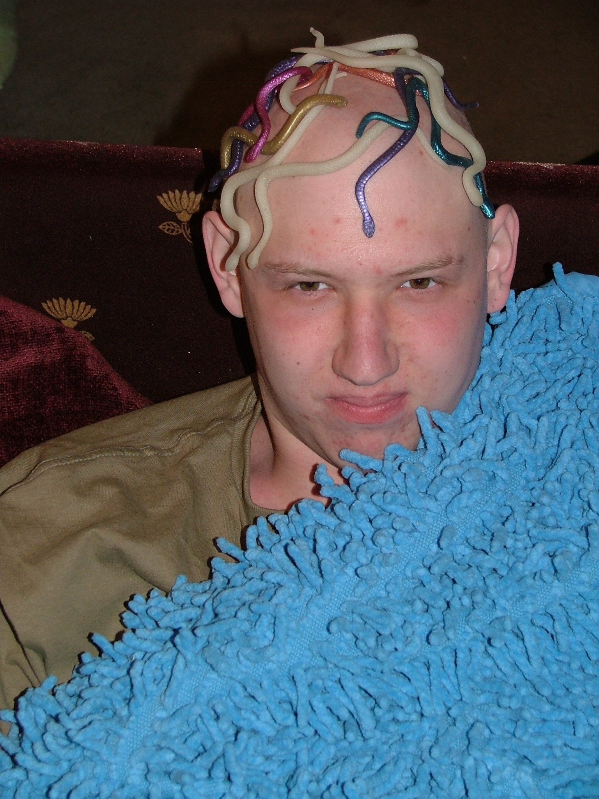

Cancer
02/03/05
Awakened by demons two nights (at least) in a row
cursing. Pain follows me, health failing.
I've been coughing for months.
My chest is turning blue.
03/11/05
Going to Bloomington this weekend to hang with the folks
To see Ryan for the first time in almost a year
We finally got the HypnoDragon to work
The hollow face illusion is super trippy
Ray Jobbins says I should go to the doctor
the professional medical opinion of a med student
3/13/05
My first Professional hair cut.
Lose the long hair.
Kinda fun.
03/14/05
This morning I picked up hair gel & donuts.
At the office I have a message (from myself)
I plan on going to the doctor tomorrow.
But if I stop dying so fast will like taste so sweet? Well...
03/15/05
After work I head to the Urgent Care center
(even though it really doesn't feel urgent)
There is a shadow on my x-ray
They hand me a manilla envelope and send me to the emergency room
I ask if I can stop by my apartment first
He asks how long I intend to delay
Oh, maybe an hour or two
I gots to take care of business
He permits it with some reluctance
It's probably not immediately life threatening
but I really need to do something about it sooner than later
I was afraid that it was nothing.
that they would brush me off and I would continue to cough
or that it was serious and I didn't want to know
early signs are pointing towards the latter.
The emergency room is busy.
Keep me waiting for a long time.
Getting sleepy.
I step on the scale
Weighing 112 pounds
They asked me about a will.
I don't have one.
Do I need one?
David. I feel. nervous.
I just want to go home.
How should I feel?
They let me in and lie me down.
I wait some more.
Yellow foam, white pillow.
Reminds me of grade school.
Visiting the nurse's office.
Waiting sucks, the suck of boredom
But I may find I far prefer it to whatever Hell awaits me.
Pray for me.
Every so often I think: "Why am I in a hospital?
Who am I? Am I insane?"
Some psychopath collapsed one of my favorite veins
while trying to take blood with a turkey baster.
I can hear a seizure down the hall. It is howling.
over my neck there is a warning:
"STAND CLEAR! THIS DOOR MAY ROLL DOWN AT ANY TIME"
So now it is that I know what it feels like to have doctors (2 so far)
tell you that you may have a large, life-threatening tumor.
But also: they have no idea what it actually is.
so far I've been told that it could be:
my thyroid, fluid, a benign or malignant tumor (lymphoma)
or something that we've never seen before
Ah, that's what I'm hoping most for
an alien to burst from my chest
I'm not bulging
So surely this tumor can't be much bigger than a baby
I'll just think of this as a pregnancy
without any increase in responsibility
I'm not looking forward to talking to my family about this
Finnegan's wake must be played at my wake (mosh pit NOT optional)
whisky (water of life) will be thrown on me
I want to be cremated and put in film canisters
put in jacket pockets and donated to churches, good will, salvation army, &c.
They want 3 days to review the results
and balk at doing a biopsy right away
she'll talk to the doctor and call back tomorrow
I'm tentatively scheduled for Monday at 1:20
After all that time they tell me it's no emergency.
I get home a little after 3am
Catch a few hours sleep before work.
03/16/05
Re: my new hair
DJ asked if I had a job interview
Jing said I look more like a gentleman than a boy
Tom said I look more like a businessman than a hippy
They tell me I need to talk to a lung guy.
I don't like this waiting room
There's nothing going on
03/18/05
I feel remarkably well considering what a nightmare yesterday was
I'm getting compliments on the new purple jacket.
03/21/05
CT scan today
I feel lazy, unable to concentrate (is it a sickness symptom or just nervousness)
Putting in the IV they splash my blood, the other nurse had to stick me
I have to pull down my pants because zipper is metal
Note: wear sweat pants to future CT scans
Taking out the IV more blood splashes
but it's still not as bad as the ER
I'm done by 2
Even though you're not dying
I want you to take this moment
to appreciate the things that you take for granted.
This hospital stuff is more of a pain than the symptoms I had.
A couple of cough drops and some robotrippin' I could cope
The Barium tasted kinda citrusy.
Pretty good in a "watch your shoes" type of way
Biopsy tomorrow.
03/22/05
It's weird seeing code 9 years old that claims to be temporary
like a septuagenarian talking about what he wants to do when he grows up
To Lab. For blood work.
pricked four times this session
My head rolls. I almost faint.
backup is called in.
I'm told my veins are easy to blow out
other nurses tell me I have very good veins
I feel pretty great (both despite and because of)
being told I might die soon
Death doesn't scare me much
I've courted him for so long we've become friends
the moment has a very sense of now,
has my full attention like nothing else ever has
I feel like I should be scared, because they expect it
maybe they are not trying to scare me, just to make it real
and I don't feel the right emotions
they seem to think that I'm too happy, nonchalant
that I must not be aware of what's going on
A nurse that looks like Cathy Bates
smiling and subtly angry at my ignorance
like she wants to shake my shoulders and say:
"My god! Don't you understand the gravity of the situation.
You stupid boy, you're going to die. So start crying"
the word cancer is now stronger than a hint
obliquely it becomes my diagnosis
and not just one possibility among many
they tell me that I need family, I need support
but I just want to be alone
The biopsy is rescheduled because I need someone to drive me home.
Ah, they're going to give me the good stuff
Ryan should arrive tonight
03/23/05
I arrive for my biopsy.
They tell Ryan it will be boring for him and he can leave.
So he does.
Ma calls him and proceedes to chastise him for it.
She asks the name of the Hospital.
He says "I dunno, it's Something Jewish"
"What, like a bagel?"
(No, it's Barnes Jewish)
I overhear one doctor telling another
"I don't think any one told him he probably has cancer"
and maybe he's right
This is not a good experience.
Not painful, but not much fun.
the the drugs weren't as powerful as I had hoped
Sure I'm still a little loopy but I could still drive myself home
they made me wait around in an oncologist's office for over an hour
(Ryan had time to finish a game of Risk (on his laptop)).
Then they told me to go home and come back the next day.
I remember Lisa telling me I could leave
Didn't respond much to her, just said to Ryan "let's go"
Apparently the drugs did have some effect
Dazed, somber, face ashen, head lolling.
She asked if it was okay
I said yes.
(I lied)
Sitting in the basement
Ryan on the phone with Mom
he doesn't have many details
I snatch the phone away
(drug impaired judgment)
I drop the word cancer as casually as I can.
I'm more worried about her than I am about me
she seems to take it seriously
Freaks out, heads out the door
starts the 6 hour trip to my apartment.
I feel badly for the inconvenience.
Then I feel good to have them near.
03/24/05
I have a message waiting (& new post-its on my desk)
Parcinski's office starts out: "this is a message for David"
(since my voice mail greeting still says I'm Chad)
we're waiting a while at Pluard's office.
a nurse pokes out her head and says:
"It won't be long for David now"
we have a good laugh at that
it's the worst thing you could say
The doctor explains it like this. When I was very little. My testicles, apparently, were in my forehead. This is, of course, normal and nothing to worry about. When you are just one cell big, pretty much your entire being is your forehead.
Anyway, on their way to my groin some rebel faction decided to take a left at my lungs. This might explain why I've never been much in the balls department. But that's another story.
In some inappropriate display of machismo, the testicle in my lung has grown to about the size of a hand grenade. My new theme song is sung by ACDC: "I've got the biggest balls of them all."
We're still waiting for the final results of the biopsy. Originally, his best guess was Lymphoma. Now, it's Seminoma type Germ Cell (aka testicular).
The doctor says if it was Lymphoma this size I should feel really sick. Since I feel really good, it seems that it's just a pathetic excuse for cancer. Whose ass I should be able to readily kick with some chemo.
They later told me that my veins blow out easy. For one set of tests they had to poke four times to fill their little vials. They've been taking blood just about every day this week and I've had two IVs so far. I've got track marks to make any trainspotter jealous. My right arm feels like a cat's belly with all them nipples.
we're still not certain.
wait for the biopsy results
may take a few days
I am glad my parents are here
Thanks for the support
but I want to believe that I'm strong enough not to need it
of all the things that should've given me cough or cancer...
I've smoked just about anything I could fit in a pipe
slugs, vicodin, flintstones vitamins, osiris root, wormwood, etc
of all the things to kill me... I've lived an unhealthy life
arbitrary fasts and binges, lack of exercise, etc
I can't believe the gall of my balls...
03/25/05
Convienently, I had previously requested today off. For Easter.
I was going to go home. Lake Villa.
Instead I have a PET scan.
They're gonna shoot me up with some radioactive sugar
and light that sucker up like a Christmas tree.
Father drives us to St. Louis
navigate the building they call "Big Barnes"
they make me wear paper pants and lie still for so long
After the procedure they tell me to drink fluid
so that I urinate out the radiation
so we have beer with Imo's pizza
Results arrive over the weekend.
It's the "Best case scenario"
the right cancer and it hasn't spread
03/28/05
First day of chemo
two stabs to get the IV in
hopefully this rig will last at least a few days
the two people who will be here 6 hours with me:
Dave to the left, then Matt (non-seminoma about my age)
They're napping.
two older gentlemen to my right.
already starting to feel heavy, headache
Bleomycin on Tuesdays. this is going to be a rough ride
injections of saline give mouth taste of hospital
some kids came in and gave out cups full of sweets
cause he has communion coming up
Nice, but weird, to be a legitimate target of charity
(reminding me of the time the lady from the library gave me food
because she thought I was homeless.
I was walking home with my pockets stuffed with DVDs)
After treatment I go to work for a little while
03/30/05
A woman is impressed just learning that I'm a software engineer
I find it odd, since she doesn't know if I'm actually any good at it
After all, programming ain't brain surgery
A nurse tells me her husband is Cisco certified.
She enjoys surfing the web.
I tell her about my father constantly checking the weather.
she says her husband watches the weather channel
in a tone which makes it sound like an absurd thing to do
I admit I don't understand the appeal of it.
We sit and snooze
amuse ourselves with minor activities
Sometimes people come in for a short session
and then leave us long-timers behind
but it is a small room and quiet
across the hall is a noisier room where
women sit and chat
It is a peaceful place
the head lolls about
there is nothing to worry about
no responsibility
just sit and watch the fluid drip
6 hours of drip. drip. drip.
It's mostly water
I gain water weight
cannot sleep at night
since I need to urinate very often
so I am especially sleepy during the day
it works out. Watching the drip.
Soporrific, sweet quiet drip. drip. drip.
03/31/05
I like the lady at the front desk of the Hospital
she tells me "We have to stop meeting like this"
wears a cross working at a Jewish hospital
04/01/05
I don't go to work at all today.
It's been a long week of chemo.
There was a Harley party that I didn't attend.
For the next two weeks I only have treatments on Tuesdays.
And only for an hour or so.
04/04/05
At work I called Switzerland today.
Food is starting to taste like metal to me.
(They warned me about this. Said it may kill my appetite.)
Strangely, this seems to increase my desire to eat.
I think I might be a robot.
04/05/05
Grandma Bennett died yesterday. Of cancer.
What a period in my life this is.
I feel so distant from myself, but so connected.
More appreciative of what I have and nearly immune to strife.
DJ ribbed me a little, saying my mohawk wasn't extreme enough
told me to dye it before I cut it
04/06/05
I ate a lunchable today. It was pretty good.
Capri sun tastes like field trip.
04/11/05
Hair started falling out today
I pull it out by clumps
wxw gave me food
wontons
Every so often it used to hit me.
The immensity of it.
And now it's lost it's impact
it's only an inconvenience,
not a real threat
04/18/05
Very busy today
KC & N8 left around 10:30
My usual room is full
so we start off in the women's room
they tell us we look like high school students
it's the second time I'm told that I'm too young
get it in on the 3rd try today - not good, but hopefully it will stick
2 pokes from Dory, the final from Mary (whose hair reminds me of a vector)
nervous when a nurse says to me
"Did you have a scan done?
How do I say this? He found that you had a ... very ... uh,"
Relief at the next two words: "good response"
my x-ray looks about normal, he says
wants a CT scan before next Monday
the one I thought was Lisa is actually named Carrie
The zombie survival guide my mother gave me could just as well be a guide
teaching zombies how to survive
A young boyfriend brought flowers to a girlfriend in treatment.
There's an older couple here as well.
Then I move to the men's ward.
Looks like Matt is done.
Good for him.
04/19/05
A lady here is on her 5th or 6th shot today
talk about no veins left
Doyle to the left of me,
Says they get it first time, every time
Even with chemo, they gave him 6 months to live
He's not much older than I am.
He's giving up, want to stop treatment.
But still sounds upbeat, pragmatic, kinda defiant.
Nurse says "No, don't do that"
She sounds emotionally sincere, but more distant than compelling.
Ding shaved his head in solidarity. Cool.
Mom should show up today.
Yesterday was flunk day.
I skipped work,
wish I could have skipped treatment
(and started drinking at 5am)
04/22/05
my mother dresses me up like medusa, plastic snakes on my head
like uncle fester, a lightbulb in my mouth

 05/06/05
Hoped to go home for Mother's day
but I stayed here and slept instead
05/12/05
I like to listen to the older gentlemen
one wants to suck on the alcohol foam
we're told there are no explicit rules against alcohol, but it's BYOB
comment about protecting my "young ears"
"his mother won't let him come in any more"
05/13/05
Grandma Reynolds is visiting
A doctor has a birthday, my mom brings party hats
05/06/05
Hoped to go home for Mother's day
but I stayed here and slept instead
05/12/05
I like to listen to the older gentlemen
one wants to suck on the alcohol foam
we're told there are no explicit rules against alcohol, but it's BYOB
comment about protecting my "young ears"
"his mother won't let him come in any more"
05/13/05
Grandma Reynolds is visiting
A doctor has a birthday, my mom brings party hats
 05/18/05
Computer froze 12 times
replacement is on the way
it anticipates its destruction
05/20/05
New machines arrives
spent the day configuring it
05/24/05
I take the day off work to celebrate my last treatment
and I feel quite ill.
05/27/05
apparently I made quite a stir over at Wash U
they had radiologists and pulminologists, etc. looking at my charts
quite impressive, my recovery
05/30/05
Memorial Day
parents brought my bike down.
Kawasaki Vulcan 750
06/06/05
Day off: another round of chemo
on account of too much fluid in my lungs
06/08/05
Cancer Survivorship & the Power of a Smile
they comment that I'm wearing shoes
I usually don't do that
Here I learn that Dr. Pluard was a CS major
and meet a guy that owned a Commodore 64
06/17/05
I threw up the barium
it was the pleasantest thing I've ever regurgitated.
Coincidently the CT machine broke just before my turn
So I have to reschedule anyways
06/21/05
My real last day of treatment
Mary says it's time for Margaritaville
06/23/05
First day to ride motorcycle to work.
07/05/05
I put in an offer for a home.
07/08/05
excess fluid (hazy-orange) drained from lungs
a procedure I could never pronounce
the most intensely painful part of the ordeal
07/14/05
becoming more asocial if such a thing is possible
or maybe just accustomed to it
think of people less as people and more as input/output vectors
what do you give? what do you take?
I hope such thoughts do not adversely affect my actions
I am still aware that cordial relations are key to happiness
07/28/05
Hey, I'm over 127 lbs.
Most I've ever weighted
07/29/05
weird. There's a ladder in the next cube.
All I see are feet.
08/01/05
I miss getting injections
Since I still have the anticipation of it
The anticipation with no end.
My usual phlebotomist only the penultimate time did she see my tattoo,
how I kept it hidden until then I have no idea.
And she freaked out so completely.
Almost killed by a boa as a child she harbors such hatred for the serpentine.
This morning was 98 degrees
Closed on my house today.
On the way back to the office.
Clear skies.
Now hail.
I drive into a wall of water.
Large chunks of ice falling out of the sky.
12:30 I'm awakened by a cop since my neighbor got his door kicked in
Looking forward to moving out of the Apartment
08/24/05
Cindy said I looked handsome
It's neat getting compliments for looking almost like a normal person
Matt has a beard.
08/31/06
Thursday
EKG today.
This is your aorta.
Checking on my heart murmur.
This is your left ventricle.
I really enjoyed the user interface of the machine.
This will be cold.
Track ball and touch screen.
10/20/07
by some happy coincidence I realize it's Wednesday now.
I double then triple check my phone for date. time.
since the microwave is now no help.
then pull the bottle from the bag.
and pour. and drink.
the barium sulfate residue
on the side of the special paper cup
from Merry X-Ray Corporation
(service is our only product)
is like a snowy spider web of a Rorschach test
tendril'd and reticulated
pools and sticks in a curious splatter pattern
liquid thick and heavy with a certain citrus twang
they gave me four cups.
I was supposed to get three.
I wash and reuse one.
Pack the others away, a growing collection.
You never known when you might want 16 oz of milk
or need exactly 300 cc of orange juice, stat.
a bloody awful inconvenience of trips and traffics
but I'm all smiles when I reach the radiology department
the most cheery place in the whole bloodletting building
"we missed you" says the woman behind the desk
she has some ethnicity. somewhere warm. Hawaii, perhaps
then Mary Kay signs me in, matronly with a hint of cartoonish joy
but all serious business when she gets a phone call
trying to locate a missing patient
"who takes an ambulance to surgery?" she asks, exasperated.
I take a seat and wait, reading. Animal Planet on the television
seems too bright and exposed a setting for such a seedy book
but all else fades as I dig into it
jerking my head when a woman with a clipboard says "Dennis"
"Are you a Dennis, too?" he asks me. I deny and dive back down
finally it's my turn
black-haired stranger has come to fetch me
we navigate the maze to room 4
the overwhelming whiteness makes the room surreal
I lie on the CT bed, disembodied. "It's moving sluggish today" she says
she compliments the skulls on the shoes poking out from under the blanket
(they cover the corpus when you wear a zipper since you need to lower pants)
asks me familiar questions. and sometimes a surprising one
"what are we looking for today? some kind of lump?"
finds a juicy vein and I warn her they can be deceptive
"you're not going to look, are you?" as she readies the needle.
but I like to look. "as long as you don't flinch" she says
she works the needle a while, it's just a little splashy
and when I turn my head away it succeeds. push in saline.
the delicious taste of plastic and then comes the vein warmer
I hold my breath when the robot tells me to
and a little while later the ride's over.
05/18/05
Computer froze 12 times
replacement is on the way
it anticipates its destruction
05/20/05
New machines arrives
spent the day configuring it
05/24/05
I take the day off work to celebrate my last treatment
and I feel quite ill.
05/27/05
apparently I made quite a stir over at Wash U
they had radiologists and pulminologists, etc. looking at my charts
quite impressive, my recovery
05/30/05
Memorial Day
parents brought my bike down.
Kawasaki Vulcan 750
06/06/05
Day off: another round of chemo
on account of too much fluid in my lungs
06/08/05
Cancer Survivorship & the Power of a Smile
they comment that I'm wearing shoes
I usually don't do that
Here I learn that Dr. Pluard was a CS major
and meet a guy that owned a Commodore 64
06/17/05
I threw up the barium
it was the pleasantest thing I've ever regurgitated.
Coincidently the CT machine broke just before my turn
So I have to reschedule anyways
06/21/05
My real last day of treatment
Mary says it's time for Margaritaville
06/23/05
First day to ride motorcycle to work.
07/05/05
I put in an offer for a home.
07/08/05
excess fluid (hazy-orange) drained from lungs
a procedure I could never pronounce
the most intensely painful part of the ordeal
07/14/05
becoming more asocial if such a thing is possible
or maybe just accustomed to it
think of people less as people and more as input/output vectors
what do you give? what do you take?
I hope such thoughts do not adversely affect my actions
I am still aware that cordial relations are key to happiness
07/28/05
Hey, I'm over 127 lbs.
Most I've ever weighted
07/29/05
weird. There's a ladder in the next cube.
All I see are feet.
08/01/05
I miss getting injections
Since I still have the anticipation of it
The anticipation with no end.
My usual phlebotomist only the penultimate time did she see my tattoo,
how I kept it hidden until then I have no idea.
And she freaked out so completely.
Almost killed by a boa as a child she harbors such hatred for the serpentine.
This morning was 98 degrees
Closed on my house today.
On the way back to the office.
Clear skies.
Now hail.
I drive into a wall of water.
Large chunks of ice falling out of the sky.
12:30 I'm awakened by a cop since my neighbor got his door kicked in
Looking forward to moving out of the Apartment
08/24/05
Cindy said I looked handsome
It's neat getting compliments for looking almost like a normal person
Matt has a beard.
08/31/06
Thursday
EKG today.
This is your aorta.
Checking on my heart murmur.
This is your left ventricle.
I really enjoyed the user interface of the machine.
This will be cold.
Track ball and touch screen.
10/20/07
by some happy coincidence I realize it's Wednesday now.
I double then triple check my phone for date. time.
since the microwave is now no help.
then pull the bottle from the bag.
and pour. and drink.
the barium sulfate residue
on the side of the special paper cup
from Merry X-Ray Corporation
(service is our only product)
is like a snowy spider web of a Rorschach test
tendril'd and reticulated
pools and sticks in a curious splatter pattern
liquid thick and heavy with a certain citrus twang
they gave me four cups.
I was supposed to get three.
I wash and reuse one.
Pack the others away, a growing collection.
You never known when you might want 16 oz of milk
or need exactly 300 cc of orange juice, stat.
a bloody awful inconvenience of trips and traffics
but I'm all smiles when I reach the radiology department
the most cheery place in the whole bloodletting building
"we missed you" says the woman behind the desk
she has some ethnicity. somewhere warm. Hawaii, perhaps
then Mary Kay signs me in, matronly with a hint of cartoonish joy
but all serious business when she gets a phone call
trying to locate a missing patient
"who takes an ambulance to surgery?" she asks, exasperated.
I take a seat and wait, reading. Animal Planet on the television
seems too bright and exposed a setting for such a seedy book
but all else fades as I dig into it
jerking my head when a woman with a clipboard says "Dennis"
"Are you a Dennis, too?" he asks me. I deny and dive back down
finally it's my turn
black-haired stranger has come to fetch me
we navigate the maze to room 4
the overwhelming whiteness makes the room surreal
I lie on the CT bed, disembodied. "It's moving sluggish today" she says
she compliments the skulls on the shoes poking out from under the blanket
(they cover the corpus when you wear a zipper since you need to lower pants)
asks me familiar questions. and sometimes a surprising one
"what are we looking for today? some kind of lump?"
finds a juicy vein and I warn her they can be deceptive
"you're not going to look, are you?" as she readies the needle.
but I like to look. "as long as you don't flinch" she says
she works the needle a while, it's just a little splashy
and when I turn my head away it succeeds. push in saline.
the delicious taste of plastic and then comes the vein warmer
I hold my breath when the robot tells me to
and a little while later the ride's over.
1.4cm
10/22/08
1.4cm
another CT, a follow-up, a nuisance, nothing more
the test is Wednesday morning, I forgot my papers
left them on the table in the kitchen
it's been four months since I've had anything to do with doctors
but I remembered to drink my contrast
and everything goes smoothly
the next Wednesday is the office visit
she spooks me as I'm reading Orwell
Shooting an elephant - gouts of blood
she takes my vitals.
"You have the pulse of an athlete - do you work out?"
and asks about the pieces of computer (RAM) on my back pack
affable and kind, she makes me smile
No, I haven't been in pain
just the usual
1.4cm
waiting in the room. door closed. reading, reading.
the roomness of it is oppressive, the walls feel so near
I hear one of the staff describing a shelf that holds plates
and she sounds - not rude, but rigid - serious and severe, urgent
domestic matters, trifles - but no sense of frivolity, no humor
and the doctor comes in and asks how I'm doing
off with my shirt and he tells me
my scan has a thing that wasn't there before
and that sentence sours the day's flavor
get a PET scan as soon as possible
it isn't big, just 1.4cm
something about cutting it out with a something-scope
(putting me to sleep first, but not the endless sleep)
I'm just sorta stunned and simply put, I'm pissed
that this might mess up my plans
and I so seldom make them
but let's not get ahead of ourselves, he says
let's get the PET scan and see if there is any activity
and to avoid bifurcating my Thursday with a 1pm appointment
I schedule mine for Monday morning.
No big deal, I figure
but I'm tired. I've been tired for days
and if the sickly feeling don't go away until they knife me
well, then it will be hard to enjoy this weekend
the grapefruit that made me cough never made me sick
if this weary feeling is caused by 1.4cm maybe its more aggressive
time bomb in my guts and sitting with sleepy eyes
and I just want to sleep the forever sleep
it's all I can think about for a while
and then I concentrate on not thinking about it
playing ping pong and I smile and I want to awaken
and do I say anything to co-workers, friends, or family?
I'll let them know if I need time for the bye-bye blade
but I can keep it quiet until then
no point in making a fuss
not for 1.4cm
little death inside of me
and I feel like we are friends
though I can't look him in the eye
10/24/08
and now it's Friday; the third day
of knowing without knowing
I haven't spoke of it yet
smiling and cheerful
but when nobody is looking
fret and fidget furtively
I cough and panic
change the song
and dive back into work
nothing can be done about it
just detach myself from myself
and pity the person to whom this happens
It's 10am, I've only been here three hours but
this day has already gone on too long, too long
but then a colleague calls me away from my desk
some technical discussion with light banter
and while laughing my joy is genuine
One missed call, from this morning, from my father.
I call him back and we talk about beds.
To Grandma-proof the house I need some bed component
And then I talk with Mother and she sounds depressed
She doesn't say anything sad, but sounds depressed
it's almost on the tip of my tongue
but I don't want to talk about it
so I don't say anything
and I don't ask why she sounds forlorn
10/25/08 Saturday
from my meditation
in the soft vanilla water of the bathtub
I rise with determination
I must get out and see the world
put on Skull Shirt, Skull Socks, Skull Shoes
and leather jacket to attack the day
I pause. tired and disoriented
afraid. destination unknown
I end up at the world bird sanctuary
it's nice to see purveyors of death on such a day
at a safe distance, through a cage
I stare into the bird eyes and they look fake
or is it just that the fake ones look so real
and am I in the cage or is he
ah, yes. it is definitely he.
I have a far greater range of motion
therefore he is the one in the cage
no point in sullying semantics
not for a lone romantic
and through the building that has snakes
and the birds that talk
she looks like Laura Reedy
handling the kestrel
and the children
the kestrel is my favorite bird
(I don't care much for children)
I sit and read by the pond that burbles
watching the little birds at the feeder
and the coi swim
a little girl climbing on the rocks
has a pink skull and crossbones on her shirt
cute.
and then I head to Van Goghz for a gin martini
An adventure! I dare boldly declare
but I get through the door
and damn, it's just a bar
filled with bar people
Behind the counter a typical brawn
and one more portly with a mohawk
serving to typical bar people, beer drinkers
the shapes become people
the pretty blonde tells a story
about finding a girl she knows broke down on a scooter
her future self is named Gwendolyn
a broken 'fly with sunken eyes
"I don't mind drinking before 10am"
she needs to check on her black kittens
a church group is on the way, I hear.
my heart sinks
"Yeah, I guess they're catholic"
but it's a gay-friendly church, I grin
their leader has a crush on the bartender
and here I am, still a foreigner, alone
but the drink sinks in, becomes my skin, my sin
I am seen, but still solo, reading quietly. then writing
and until Gwendolyn asks how is she doing
I'd forgotten about cancer.
Tom Petty plays - You don't know how it feels
and I relax. melting into the wooden chair, bar stool
and I remember what my dad said (with a slight slur, I think)
"I used to hang out in bars. I had friends there" (paraphrased)
With the implication that he gave it up for family
in the tone like Moxy Fruvous singing:
"Couldn't call it a loss or a win"
I worry more about inheriting his curse
than I do about a damnable little intangible like cancer
can't drive like this, stranded. it's only 18:00
quick calculation based on drink size, my weight
wait, how am I calculating? I'm missing some numbers here
Halloween decorations. so this is where they end up.
they talk and I shouldn't be here.
I'm not meant for this world.
afraid that I'll do another stupid thing
my ink flows, but my cerebellum holds shit for words
funny how that works.
without this written record, I'd never believe I thought this.
surrounded by booze and temptation, the thing I thirst for is water
let me regain my bearings. water, only. I have some in the car
but I sit still. no more voices in the place.
"Doin' all right, bro?"
"Yeah" I answer automatically with medium gusto
and I see my fat fuzzy digits move mechanically over the soft pages of my book
reading lines of poetry that hit a target of me that understands less,
but feels more.
And I feel that I am without location
Until I hear a song play that previously I had only heard by Weird Al
And I notice myself, in leather and despondence. out of place
Alone. Me and the bartender. My tip and martini glass
I am unaccustomed with the proper mannerisms of this sort of establishment
but despite it all I feel good, damn good
two couples walk in, ask for menus
suddenly I'm the incumbent
"this is a martini bar"
he says in a fancy shirt and inside I scoff
how did this happen? and "where is my mind" starts playing
I love this song and I'm looking at the art on the wall
Sheila A Lewis - stuff that looks like starry night
I wonder what'll happen when the song ends
the final, fading crow of the cock
and it slides into emo. Fall Out Boy, Arms Race.
The bartender whistles along. The sun sets.
I drive myself home to drink scotch
and to further forget myself
10/26/08 Sunday
played Planescape Torment and watched videos on my computer
didn't once leave the house. I'm not sure I said anything.
not feeling too sick, maybe it's a false alarm
Typical Sunday
First missed call and I'm intrigued
It's a Brentwood number, close by
but I don't know anyone named Seema Patel
After the second missed call I decide to call back
"I received a call from this number and I don't know who you are"
"Is this Dave Bennett? I didn't leave a message; you must have caller ID"
OK, this is weird. A woman calling me at 19:00 on a Sunday
and she knows my name.
Oh, it's the technician that is doing my PET scan tomorrow
No, I'm not diabetic
remember to hydrate, don't eat
take medication with a cracker
(but I'm not on medication)
find your way to outpatient at 9:30
then we'll take you to the van in the parking lot
10/27/08
Monday morning
stop into work
send some emails
explaining that I'll be late
missing a meeting
ready for a build
work phone says 6:40am
the rest of the world is at 7:35am
I set up stuffed monkey Harold in my stead
with a post-it on his chest, introducing himself
I hope he doesn't check in any bugs; he's using my CVS login
I step in and it's somber
(I shouldn't be this surprised)
I start to regret wearing another skull shirt (HackADay)
but the lady at the registration desk laughs
and says she likes it
I arrived too early
sitting, waiting
then take the lift into the van/truck/thing
and they ask me the usual sorts of questions
starting with my birthday. who sent me here
No, I'm not diabetic. No, I didn't eat
then a few unexpected questions
like spell seminoma
how tall I am and how much I weigh
and how exactly did I get a testicle in my chest
I gesture with my hands: well, this is how it was told to me...
there's an old man behind the curtain
makes hardly a sound
it's sleepy time
while glucose circulates
I laugh to see the little lead cylinder around the syringe
You'll be radioactive for about 6 hours, but you won't glow
Seema grabs my foot gently in passing
calls me chipper, then a real trooper
the man goes to the scanning tube
a woman cycles into his chair
"Hello, young... person. How old are you? I'm 65"
"Is this your first PET scan? Ah, you're an old pro"
45 minutes of sitting in a chair
absorbing radioactive sugar
afraid to move too much
20 minutes in the tube
close your eyes
when I arrive Harold has a note from wxw on his head
he is too cute to punch, but he is not working at all
very bad. so the punches are saved for Dave.
I'm pummeled the first time she sees me
then later she asks about the bracelet
and I try to dodge the question
"Are you alright?"
"Probably"
"You better be"
anxiously awaiting a phone call
feeling great, then feeling bad
then back to great again
ignorance is the twist
17 becomes 18:00
I'm exhausted
10/28/08 Tuesday
at 15:00 my phone vibrates. heart races
text message from someone I don't know
New York number "How's the show?! Esau"
I wish I knew whether or not I have cancer again.
Parents call, asking for their rock band dongle
and Mom sounds chipper, she cancels Christmas
not for everbody, mind you. just for us
let's take a trip instead
10/29/08 Wednesday
I don't feel well today
I take a half an hour to mail the package
and I'm told that the world fell apart in my absence
"Don't get hit by a bus"
(Did she just say that her name is Gin, More Shoe?)
Trying to get an answer
I call the number that showed up when Tracy called
to remind me of my last appointment
but a robot answers the phone
and no choice sounds comforting
I hang up
10/30/08 Thursday
the person before me got four dollars worth of gas
and across the street at the Jiffy Lube
the guy with the sign is quite animated
hawking an oil change for 19.99
livid and screaming
gesturing wildly
10/31/08 Friday
driving to Galebsurg
into the rising sun
birds beyond the bridge
across the Mississippi
back at Knox
register, sign the wall
beautiful weather, sitting outside
waiting for class to begin
it's now warm enough for me to take my shoes off
and read my book on a bench in front of Old Main
a woman with a British accent and a guy in a Fedora
ask me where is seminary street
"I'm looking for a strong cup of coffee
and Seminary street is where I can get one, right?"
it all seems to me quite lovely
During the CS get-together my pocket vibrates
Voice on the phone says Lumb nodule, Barnes West County
biopsy to be sure it's not a recurrence
Pluard calls and says activity, thoracic surgeon, pluck-it-out
11/03/08 Monday
Morning call from the office of Bryan Meyers, Thoracic surgeon
"How does your tomorrow afternoon look?"
I'm pretty damn excited to talk to a thorax expert
The leaves are in full glory as I look out the window
at red peeking through a mane of yellow
afire when the sun hits it
I stare at the potato soup
sitting in my plastic spoon
I put pepper in it without even tasting it
colors suspended in bland white
strange, uneven textures
the coagulation of cream
and my friends are in Wisconsin
or Chicago or Ohio or Scotland
and I am alone in St. Louis
with my potato soup
Getting quietly agitated, knowing not to say anything
I am unprovoked and I'd look like a jerk
but I'm tired and I want to snap
finding it hard to concentrate on anything
I knock out a dialog because it's easy and I don't have to think
but most of the mindless tasks are too low a priority to justify doing them
so I stare into space and call it "thinking about Genomic Integration"
and then I'm interrupted by one person or another
pretending that the intrusion irritates me
when actually it saves me
I call my mother when I get home
and give her the news
she offers to come down
but we're old pros at this, I tell her
and we'll wait and see
11/04/08 Tuesday, Election Day
My appointment moved to 1400
Doctor is in emergency surgery
So I meet with the Nurse Practitioner
Mom calls while I'm waiting
says she's on the way
her coworkers made her go
and they give me a picture of my lung
talking about surgery options
and it starts to feel real
lean back and relax, she says with her hand on my shoulder
you are so tense I believe that you would snap
if I tried to move you
I show the picture to my coworkers
"What's that a picture of?"
"My tumor"
11/05/08 Wednesday
Wake and watch the news with my mother
Apparently, Obama won.
What are the possible ways to get this out?
Well, there's a needle they can stick in you
like your first biopsy - if it's small enough they can get it all out
and then theres a method where they stick in a video camera
one where there's a larger incision and the doctor sticks in his finger
Another possibility is through the inside, something bronchial
but I don't think we'll go that route
Ah, screw it - I'm doing it myself
hand me the swizzle stick
Ma calls, asking for more information
I haven't heard anything
I call the thorax office
looking for an update, an estimate
Dr. is in surgery, I'm transferred to Denise
they looked at my films, probably a CT/Biopsy
Good news, I think - one of the least intrusive options
Some knock-out juice and needle time and then it is over
They only do them on Tuesdays and Thursdays ; probably next week
Not good news for Mother who has obligations back home
and now I regret having told her too early
she is stressed and I am agitated
I eat a fudge brownie and calm down
I told her not to come, but I'm glad to see her
she needs to take responsibility for her decision
Denise calls 16:00, tells me the Biopsy/CT is next Thursday 11/13
10:00 at Big Barnes, Downtown.
I head home earlyish
A woman sitting in a white car waves me down
looking for a jump. I go upstairs and get Ding
I find pasta shells waiting for dinner
And Mother is feeling better now
Play some Wii fit, I call Ryan
who is at the Parent's house fixing his jeep
we discuss Fallout 3 - he agrees with the Sweedes
it is Obilivion with Guns
While I'm talking to him Mom calls Dad
Dad asks Mom to ask Me to ask Ryan if the pizza is done
and then we have speakerphones and echos in stereo
It's not a bag, not a truck - it's tubes and sponges
We're checking YouTube to see inside a lung
My insides are dark and foreign to me
Here's a pig and here's a sheep
11/06/08 Thursday
Cleaning the kitchen
on such a beautiful morning
It's still near 70 and rain starts to fall
Mom heads home. Report cards call
11/07/08 Friday
On the socks, skulls and space invaders
I see one in my coffee cup now
in the espresso foam
This is like I expect war to be
characterized by stretches of nothing
losing men to attrition, disease, desertion
and only occasionally is there action
a flare-up from a chance encounter
grit your teeth and endure it
come alive
then the battle ends
bury your dead and carry on
losing men to attrition, disease, desertion
11/10/08
They gave me a blue book "Instructions for Chest Surgery Patients"
I found most of it rather comical; I don't think it is meant for me:
Alert us if you are taking Abciximab, Aggrastat, Aspirin, Lovenox,
Vitamin E, Warfarin
'That sounds more like a game than a medication'
There are TWO LUNGS in the chest.
The job of the lungs is to breathe in oxygen for the body to use
Eating is out!
Rest and relax the night before surgery. Ask for a sleeping pill if needed.
Give all your belongings to your family for safe keeping
Remove all of the following: dentures, nail polish, all underwear,
artificial body parts
Bring comfortable shoes with non-slip soles to walk in after surgery
Go to the bathroom before you receive your medicine
We will place a mark on your body on the side of the surgery.
We will ask you to confirm which side will be operated upon.
Your doctor wants you to use an Incentive Spirometer to help you breathe deeply
Concentrate on feeling your chest sink down and in.
You will have special IV's put in your neck and wrist.
They will remain in place for several days after surgery.
You might wake up with a breathing tube in your mouth.
Do not try to talk while the tube is in your mouth.
You will have nothing to eat or drink after surgery.
You will start with liquids when your doctor says you are ready.
You may not have much of an appetite.
The patient will be looking more like himself/herself, but will tire easily.
You will be taught about going home.
You need a balance of rest and exercise for recovery.
Do not stay in bed. Get dressed every day.
Do not lift anything heavier than a gallon of milk until your doctor says you can.
You can resume sexual relations when you feel comfortable.
For many people this is about 2 to 4 weeks after discharge from the hospital.
Do not use powder for at least one month.
You may have mood swings and feel depressed.
Do not become discouraged.
11/11/08 Tuesday
Denise calls and asks me to arrive at 09:00
and they need lab work, asks me the last time I had my CBC
Has it been more than 30 days? I speculate. Probably not.
And they also want PTT. Where do you want to get that done?
(Like I know what I'm doing) You've had them done all over...
And so we're chatting of labs. Quest Dx, Barnes Jewish, and Christian NE
She calls back almost immediately. Telling me that I'm young
And not on blood thinners. So they don't need the PTT
Lab is just a minor inconvenience, but I feel a deep sense of relief
Then DJ stops by and tells me that a High School kid is coming in
and that I will be talking to him in about 30 minutes about testing the software
Justin asks me which Jing is on the left and which is on the right.
Tomorrow is an interview with Lina Dong
Ding and Dong Playing Ping and Pong
I anagram her into An Old Gin
(he says it can also be spelled Dung, but is pronounced like Doong)
I stop by the grocery store on the way home
to get stuff to make chicken curry
cashier asks me, in a British accent, if I am a musician
a certain Je ne se quoi with a flourish of the hand
"It was a compliment, my son plays the cello"
11/12/08 Wednesday
I'm not sure how she got it
she really shouldn't have my extension
and I hint that she should call the main number
since I will be out of town for a few days
and she wishes me a happy vacation
getting antsy and agitated
trying not to show that I'm three weeks weary
I think I felt it kick
Ambulance, six cop cars, police dog
at the neighbors house as Mother and Aunt Kim arrive
and we've still no idea what the commotion was about
the woman pulled out on a stretcher
minutes later, the man drives away
The timer goes off and my chicken curry is ready
11/13/08 Thursday
Morning
driving east on I-44
we see a billboard for the cyberknife
I wish I had one of those
it's just a biopsy
arrive at Big Barnes
past the fountain, navigate the maze
everybody asks me my full name and birthday
go up to radiology and the desk hands me a phone
"tell them that you want to register for a CT"
the doctor introduces himself, Dr. Maldonado
after a few tries the desk lady decides that she can't pronounce it
"I'll just ask for Ronaldo"
then they stick in the IV "just in case"
and I hate having it in my arm, the tape is the worst
"Do you know why you're here?" the doctor asks
"1.4cm" I tell him. I've done this before, I explain
there's a chance, small chance that they'll pierce the lung
and I'll have to stay overnight to re-inflate it
didn't they call you last night, didn't you bring a change of clothes?
meh. if it happens I'll just wear these clothes tomorrow
the operation just takes a few minutes
It's mostly getting into position and observation afterwards
up to the fifth floor for the procedure
I'm awake through the whole thing
lying on the CT bed
face down and I hate lying like that
various doctors introduce themselves as they walk in
my right arm falls asleep
robots and doctors talking to me
take a breath and hold it
you can breathe
then drawing on me with the sharpie marker
you'll feel a scratch then some stinging
stinging of the local anesthesia
a wet back
you'll feel some pressure
then some pain
don't be surprised
take a breath and hold it
keep holding, keep holding
don't breathe, don't breathe
you can breathe gently now
sounds like there's an amature poking me
and some older doctors giving him advice
then someone else takes a stab or two
scanned intermittently, in and out the tube
you'll feel a scratch then some stinging
you'll feel some pressure
take a breath and hold it
keep holding, keep holding
don't breathe, don't breathe
breathe gently now, gently, gently
right arm falls off the bed and I have to pick it up with the left
you did well, he says. sounds optimistic
you'll have some blood and ink on your back, but you bathe daily, right?
he puts on two bandaids
"it's a small lesion, but I think that we got it"
"it's a combination of art and luck"
I roll over into a stretcher and I'm carted away
lying on my back watching the ceiling go by
I have a glowing finger from the oxygen detector
and I'm trying to get the high score
It seems that if I relax I can get it down to 95
but I don't think I can get it up past 100
it beeps, regularly. then a double beat
then faster. slower. skips a beat
they take an x-ray and I'm free to move about the floor
Mom and Kim bring me a ham sandwich
we analyze the vending machine
waiting for the next x-ray
the x-rays afterwards look good
no punctured lung, no overnight stay
We'll get results in two to four business days
11/14/08
We drive to Union Station
looking for the Megabus stop
then to the zoo to see the baby tigers
3 boys, 2 girls - playful and cute
trying to eat the small birds
11/16/08 Sunday
Getting the last of the solidified creamer out of the container
so that she can use it for the remnants of brown sugar
stabbing at it with a butter knife
chunk, chunk, slice
finger blood all over
moments of panic
nearest hospital?
we subdue it
and just head to Walgreens for better bandaging
she apologizes and apologizes while I tell her not to
and then I call her a knucklehead
because it is what she would say to me
we go for a walk at Queeny park, dogs and horses
then while vacuuming the spare bedroom it re-opens
spurting blood, centimeters in the air in time with her pulse
and so I take her to the Urgent Care center
where they put on liquid bandage
and tell her to stop vacuuming
11/17/08 Monday
back at work, 58 emails waiting
doesn't look like anything is on fire
I find out that I have an interview this morning
Games and graphics - my interest is inflated
deflated when I learn it's all web-stuff
11/18/08
And now it's noon on Tuesday
I am waiting for the result of my biopsy
waiting, waiting
waiting
11/19/08
Wednesday
waiting
In software you inherit the sins of your fathers
Fixing bugs forged when I was still in school
Turn the music up until it hurts a little
and let it blast away all else
Click Click Boom, The Dirty Glass
leg moves. nervous tick or a phone call?
waiting, waiting
I call the doctor
Denise answers
heart flutters, butterflies
it's not in my patient chart
she checks the hospital chart
still no results - what's the holdup?
she calls the pathologist then calls me back
the cells are atypical, but we can't confirm the type
whether malignant or benign, seminoma or something else
if the results remain inconclusive then they will do a lung biopsy
it's not hope that I cling to, but rather ignorance
my eyes are dancing around the room
but nowhere do I see an escape
not from the enemy inside
I just want to scream
that this is petty and I don't have time for this bullshit
instead I'm just a little snarky and do my best to ignore myself
and each false smile leaves me a little more flayed
until it feels like my skin will no longer hold
waiting
11/20/08 Thursday
One thing after another
Plumbing problems due to roots
My ingrown toenail is painfully infected
Passport renewal rejected, bureaucratic bullshit
Mother locks herself out of her running car trying to deal with this
She was planning to go home on Wednesday
Father arrives. Without a plan, I think.
Parents start to doze while we watch Pushing Daisies
11/21/08 Friday
I hear stirring, I suppose, that wakes me at one am; sobbing and panic
something about money, I think. The walls are thin but I try not to listen
it takes a glass of water and some soothing music to get me back to sleep
I'm on the phone with a customer for an hour and fifteen minutes
my punishment for showing up at work early
he's a nice guy, but a little slow
Thorax calls my cell while I'm on the phone
I miss the call
Make an excuse to transfer the call to a coworker who has since arrived
The results of the needle biopsy are still inconclusive
they want to do a lung biopsy
In the bathroom I take a private moment to break down
dry sobs
I just can't take it anymore
Unable to smile, even a fake smile
trying to keep my face stony and unreadable
while inside I have fallen apart
appointment at 13:00
parents stop by the office, I show them the taco picture
I finally meet Bryan Meyers, who is less intimidating than I expected
he speaks frankly and he smiles. he downplays his role in this
"humble and surgeons don't usually go together..." he jokes
there is a possibility that it is granuloma rather than cancer
(living in the Midwest, spending time outside. do you camp?)
Mother asks questions. I just stand and listen.
Two options: cut it out or wait and see
I have to make the choice
And both options suck
he describes the procedure, including the part where he sticks the
video camera then maybe his finger in my lung
I nearly burst out laughing; ma says she wanted to shout out "swizzle stick!"
"I would have done it if you had looked at me"
then a stapler to keep the lung closed
a button I can push for morphine
you'll probably go home the next day
or leave it in, get scans every 3 months and watch its size
if you don't mind having it hang over your head the whole time
I'm given a printout of the pathologist's report:
"Aspirate smears show rare groups of epithelial cells with moderate
sized, ovoid nuclei. the aspirate smear lacks the 'tigroid
background' often seen in seminoma. There are scattered multinucleate
cells. The presence of giant cells is somewhat confusing; there are
both foreign body type giant cells with fewer numbers of nuclei, and
some what more syncytial appearing larger cells with as many as fifty
nuclei. Seminoma can induce granulomatous reaction; distinction
between tumor induced giant cells and infectious giant cells is not
possible on this limited sample."
and it describes me as "a 27 year old man, status post orchiectomy for
seminoma, now with new 9mm left lower lobe nodule"
orchiectomy, huh? It means they chopped my balls off. As far as I
know that hasn't happened yet. Not physically, at least
A weight is shifted; nothing will happen in the short term
I can't yet concentrate, but my stress starts to melt
devel meeting at 14:30 and now I'm doing fine
at 16:00 Pluard calls - let's get a CT on Tuesday and check the size of it
if it is smaller, it's probably just an infection and nothing to worry about
if it isn't...
we aren't going to worry about that until after Thanksgiving
11/22/08 Saturday
parents go home
the house is quiet again
11/24/08 Monday
In the sixth or seventh hour of the day the sickness starts to kick in
the kind that comes when the stress has passed
and the body no longer is in combat mode
Little brother arrives with a toolbox full of toys
soldering gun, capacitors and a bread board
I compliment the flames on his Jeep
11/25/08 Tuesday
Morning CT
I'm reading Modern Statistics for the Life Sciences
a woman comes in with a walker
I overhear her birthday
born in 1921
I'm thinking of getting future scans at West County
it's closer to my home and work
but I like Mike the CT Guy in St. Peters
he reminds me of a dentist that isn't an asshole
Pluard calls 16:38
he's looked at the CT scan
the spot is still there - let's pluck it out he says
it's not urgent - it can wait until after Thanksgiving
11/27/08 Thanksgiving
"Remember when I had a turkey on my head?"
after banging her head on the freezer door
food preparation, eating, cleaning
wii bowling with grandma
something about tricks and dogs
requests songs while we play rock band
she likes the Police - Roxanne until she hears it
and Jon Bon Jovi because he's been married to the same girl for so long
I'm writing in Scheme for the programming contest we have going at work
12/01/08 Monday
a presentation from an interviewee
on an approach to targeting Ovarian cancer
the ovary is different from the eye
but not as different as you might think
they are both immune-privileged organs
things the body is hesitant to inflame
it is unpleasant to go through chemotherapy, she says
decreased quality of life
and destroyed pancreas and diabetes
Are you all familiar with a PET scan?
"Give us some good news!"
Looking at placentas and PCR
she got lucky in some bench work
ICOS is regulated by a single ligand
specificity is a good thing
12/05/08
Friday, 16:00 Father calls
on behalf of Mother, it seems
they are getting anxious for results, for it to be over
and so I call the thorax office, but Denise has left for the day
she might call me back this weekend, or maybe not 'til Monday
it doesn't bother me. I'm not bothered at all
Mike and his Family are visiting the Parents for Christmas
and Dad is trying to plan a happy, stress-free Holiday
I'm not sure that I'll make it this year
my sinuses are sore and I think my right lymph node is swollen
the brain in my head is swimming in a resigned daze
ready to fade into sleep
12/07/08
15:30 on Monday and I realize that I haven't heard back from Denise yet
ah well, c'est la vie and c'est la mort all things come in proper time
I count the lines in my coffee cup - from leaving it sit on the table
I touch my face and try to count the lines there
it is moisturized and relatively smooth
scar over my left eyebrow
and spots of stubble left from this morning's hack job with a razor
I've reached the age where there is no selection bias against the
expression of genes that kill me
17:00 Denise calls.
She received my message
I had prepared my explanation
but the conversation starts in the middle
You must be calling because you want an operation
the thorax people discussed my CT and were all like "Did you order that?"
"No, man. I didn't order that - it must have been Pluard"
Did you talk to your oncologist?
But what does it all mean?
So, you'll be wanting this before Christmas?
Yeah, I guess - if you can do it before then
Kim the scheduler will call you later
or maybe I will, says Denise
12/11/08 Thursday
Morning I head downtown for pre-testing
the lobby, the hospital is beautiful, bright and open
pleated glass climbs seven stories
Do you have or have you had?
presently to heart murmur, never to just about everything else
the last is cancer - I don't know whether to mark past or presently
and to the question When was your last menstrual period?
flip over the form to confirm that I marked male
I assume that it makes the question optional
Sitting at the registration desk
and they ask me so many questions this time
who to contact in case of emergency
"Does your mother have a middle name?"
my mind goes blank J-J-Jean, I stammer
it sounds strange to say it, rolling the word in my head
the woman expresses surprise and concern with regards to Paula Abdul's stalker suicide
Where is Lake Villa? And I describe Gurnee and Chicago, Wisconsin
measure my neck, she said for sleep apnea "I'm not trying to choke you"
they give me special soap to use, from neck down, not for face or genitals
they laugh and sass in the hallway
"You're worse than I am and I like aggravatin' "
The anesthesiologist comes in next, the liveliest of the group
(and I expected her to be the most sedate)
compact and vibrant - she treats me like a person
when most just treat me like a product
has me looking up, down, left, right
then just the eyes, then breathing, etc
looking at the ECG result from years ago
"Normal, normal, normal - it couldn't get any better than this!"
she enters the information into an old reflection client to a session
what looks like an old-school unix command line app that predates curses
A quick stick for lab work - magic touch - no digging, but it leaves a bruise
things that are verboten for a week - aspirin and vitamin E
means no more Boost for breakfast - I don't know what I'll have instead
mandarin oranges in jello, I guess - I'm back down to 116lbs
12/12/08 Friday
there are things that you do
and things that you endure
the distinction has become fuzzy of late
eating Gouda cheese while watching Death and the maiden
I think that it tastes good, but mostly I can't taste
life comes at me, goes around me
I just stay out of its way
the grave will take me just the same
it doesn't mind that I only pretended to be here
12/18/08 Thursday
Up at 5ish
to arrive at the hospital around six
Dad tries an alternative route
and finds barricade after barricade
apparently the I64 construction has moved
so far he's blown one stop sign and one red light
we tell him to be careful when we spot the squad car
we register and get the pager that looks like a taser
fill out some paperwork
they draw some blood and we wait some more
I read a few lines from Paradise Lost
I give my mother an account on my Linux laptop
and put her in the sudoers group so she can access the Internet
they call me up to the pre-op and give me a gown, a lovely little floral thing
Harold and Kumar are my anesthesiologists, a couple of comedians
everybody asks me name, birthday, the last time I ate
I have IVs in both arms, but it's the A-line that really sucks
they write YES with marker on my left side
they have scheduled three hours, but they expect it to take an hour and a half
I lose consciousness
and wake up in the recovery room
groggy and with additional tubes sticking into me
oxygen in my nose
I hear them talking about my blood pressure
too low, too low. lost too much blood
parents come by and I only vaguely remember pieces
the first thing that my mother says to me is "you look terrible"
"we have five minutes" (we're from the future)
the good news is that you don't have cancer
the bad news is that my lung had scar tissue sticking it to the ribs
complicating the procedure - they had to scrape it off
bleeders and gushers - the doctor has never seen so many
had to make a large incision
I was in there for three hours
and they didn't have time to look at more lymph nodes
I'm leaking air - the bubbles in the blue fluid
and when I take breath I drain a reddish orange substance
but everything is looking up
I'm moved to the observation area for the night
PCA is on my pole - a button I push for pain control
an incentive spirometer to suck on - do it ten times an hour
around midnight I seem to stop draining
I hear more bubbles and I'm short of breath
I can't get to my high score on the spirometer anymore
a shot of benedryl into my vein tube and I'm feeling dreamy
they give me an X-Ray and tell me that everything looks fine
12/19/08
they give me two liquid meals in a row
despite the doctor asking that I receive solids
I don't mind. the solid food here sucks anyway
a physical therapist comes to make me walk - across the room and back
do you want to wear your pain ball like a purse or a necklace?
her primary concern seems to be with the visibility of my "tush"
"I'll tie the back of the gown so that no one can see your tush"
"I'm not looking at your tush" as she sets me back into my chair
they move me to a room - my roommate is Jesus and he complains of diarrhea
my parents bring me Jesus bandaids - and a pirate monkey of my own
nurse hands me a urinal to piss in, but it's not easy
they are threatening to put the catheter back in
but I succeed with half an hour to spare
I push the button - please take a look at my bandage, I 'm leaking
Steve comes and explains that it's okay
square peg and round hole
it's not even from a tube hole, it's from the pain ball, local anesthesia
and then he talks about food
eat a little bit of everything, get outside food if you want it
he had McDonalds after his surgery
12/20/08
Saturday morning they move me to a new room
one with a delightful view of Forest Park
an elderly gay couple are checking out
and when they do I am alone
I'm feeling much better now
I can detach the vacuum line and get up and walk
watching the helicopter come and go
In the afternoon my roommate is Mr. Smith
he is a nice enough fellow and has a creepy clown balloon
pirate monkey hangs from my pole
with the water and the pain control
my parents bring me pants
 Barbara is a darling - a big, black mama - full of savvy and sass
she gets them to consolidate my IVs
and supervises as they take the front tube out
12/21/08 Sunday
the back tube comes out, walking is easier now
Mother is miffed that she didn't get a picture of its removal
it's over there in the biohazard waste bin, if you want it
I reached the third column, over 1050 somethings of fluid
Barbara is a darling - a big, black mama - full of savvy and sass
she gets them to consolidate my IVs
and supervises as they take the front tube out
12/21/08 Sunday
the back tube comes out, walking is easier now
Mother is miffed that she didn't get a picture of its removal
it's over there in the biohazard waste bin, if you want it
I reached the third column, over 1050 somethings of fluid
 Julie the Jamaican nurse rolls me out
she chides me for living alone
and gives me a hug at the end of the ride
12/22/08 Monday
I arrive at work around noon
~1630 the 6.4 meeting ends; I drop a percocet
OK, I'm not probably not going to code anything
but this should make the 1800 meeting interesting
Just before the meeting starts Jenny makes me go home
You should be resting - Am I the only one that cares about you?
Dad has been waiting on the couch
he comments on how quiet the office is
We eat at Applebees then shop at some stores
Futile. Fuckit.
This year I give gift cards and just a little more
12/23/08
On Tuesday Dad drives me north
It's green until we hit Springfield
where we see the first skirts of snow
by Bloomington it's downright inhospitable
we listen to PKD - Do Androids Dream of Electric Sheep
Dad works himself into serious anger at the other drivers
swearing, speeding, swerving. he drives well, but copes poorly
lying in the dark my hands are moving
in the borderland between reality and unreality
I have the feeling that my hands aren't installed correctly
maybe these aren't even the right hands
but these are the only hands I have
crossing and uncrossing my arms and what utility is it?
why am I doing this?
12/24/08 Wednesday
my first bowel movement since the operation
I can stop nervously counting the days since my last
a dream of my role in a junta, a regime change
we are the opposite, he says
pointing at a chart
but the situation isn't so simple
the negative of a picture changes everything while changing nothing
I'm left home to nap while the rest go out for sledding
I take pictures of snow and ice
later, it starts to melt
then it refreezes
12/28/08
Ryan gives me a ride home
Dorian Grey is lovely but Oscar Wilde fails to hold my interest
Bears Discover Fire is surprisingly good - we get a few chuckles
I play some EyeHateGod - screamcore and then we discuss it
It's better when it's fast - you can dance to it - anger and catharsis
the battery light goes on, but we make it home
he isn't so lucky on the return trip
Dad has to replace his alternator
and time has moved - hurt and history - all in a haze
sweating with the trench on, goose bumps with it off
I'm waiting for reality to return, to find its strength
12/29/08 Monday
today I make an early egress, 13:00
I tell my coworkers that I may return after a nap
at home I lay in bed and listen to another section of Slaughterhouse Five
I'm really enjoying this audiobook
I've adopted Ethan Hawke as the voice in my head
and then I make the appointment for my follow-up
the whole thing seems really neat
the way the phone talks to me
"I won't hang up until you are in the computer"
and the directions for the x-ray
enter the side door, it's the most popular door
much more popular than the front door
elevators and Gs, it's on the ground floor, you see
"oh no! am I confusing you?
just come up and see us if you get lost"
one of my wounds has become infected
I am surprised to find my freezer de-iced
and then I remember Dad telling me that he did it
one day when I left him here alone
or maybe he was with Mother
and that the only thing he found in there was a nearly empty bottle of vodka
which was really Gin, I tell him
and today I pop another percocet and finish the gin
I nurse my wound with hydrogen peroxide, neosporin and a bandaid
12/30/08 Tuesday
I remember to take my garbage out
Is it more than 10 pounds?
I'm not supposed to lift more than 10 pounds, I think
well, it's mostly dragging and the recyclables roll, anyway
It's past 1700 and I'm still working
I guess that means I'm getting better
or just that I've found more interesting projects
I play ping pong today. still sore, about to bust a seam
12/31/08 Wednesday
above my head there are four pieces of scotch tape
holding in the black metal air blockers for the vents
we're running an experiment
the other vent has no tape and we're comparing the number of fatalities
so far, there is no measurable difference between the two
on New Year's Eve I'm asleep at 22:00
so it goes
01/02/09 Friday
today's follow-up starts with an x-ray
and I have to wear a gown because my shirt has buttons
I had four layers on.
then I head upstairs
I look over some papers on a clipboard, hand them back
I'm down to 115.9 pounds
oxygen at 95, then she changes the 5 to a 6
Denise takes my blood pressure then takes a look at the incision
I warn her that it got a little infected
says it all looks good, good
asks if I've been leaking
then cuts off the stiches
some people start oozing if they sneeze too hard
I ask her if I should put neosporin on it
she says no. keep it dry
don't use a bandaid, but you can use gauze
she asks when I plan to return to work
and I tell her that I've already been back
she offers to provide me with excuses to skip work
I laugh and thank her and decline her offer
they let me take all the time I need
and I'm feeling much better now
sitting on the couch
grinning all the while
with a chemically induced smile
weaning myself off the pills
to save some for a rainy day
but it seems to rain every day
drinking beer, reading Bukowski
01/07/09 Wednesday
I run my finger up and down my side
here is the hole with swirls and snags
and here is the ridge
that starts low with a valley, a tender scar
then the flat and flaky part that is the peeling glue
then the top is puffy and painful, oozing
Julie the Jamaican nurse rolls me out
she chides me for living alone
and gives me a hug at the end of the ride
12/22/08 Monday
I arrive at work around noon
~1630 the 6.4 meeting ends; I drop a percocet
OK, I'm not probably not going to code anything
but this should make the 1800 meeting interesting
Just before the meeting starts Jenny makes me go home
You should be resting - Am I the only one that cares about you?
Dad has been waiting on the couch
he comments on how quiet the office is
We eat at Applebees then shop at some stores
Futile. Fuckit.
This year I give gift cards and just a little more
12/23/08
On Tuesday Dad drives me north
It's green until we hit Springfield
where we see the first skirts of snow
by Bloomington it's downright inhospitable
we listen to PKD - Do Androids Dream of Electric Sheep
Dad works himself into serious anger at the other drivers
swearing, speeding, swerving. he drives well, but copes poorly
lying in the dark my hands are moving
in the borderland between reality and unreality
I have the feeling that my hands aren't installed correctly
maybe these aren't even the right hands
but these are the only hands I have
crossing and uncrossing my arms and what utility is it?
why am I doing this?
12/24/08 Wednesday
my first bowel movement since the operation
I can stop nervously counting the days since my last
a dream of my role in a junta, a regime change
we are the opposite, he says
pointing at a chart
but the situation isn't so simple
the negative of a picture changes everything while changing nothing
I'm left home to nap while the rest go out for sledding
I take pictures of snow and ice
later, it starts to melt
then it refreezes
12/28/08
Ryan gives me a ride home
Dorian Grey is lovely but Oscar Wilde fails to hold my interest
Bears Discover Fire is surprisingly good - we get a few chuckles
I play some EyeHateGod - screamcore and then we discuss it
It's better when it's fast - you can dance to it - anger and catharsis
the battery light goes on, but we make it home
he isn't so lucky on the return trip
Dad has to replace his alternator
and time has moved - hurt and history - all in a haze
sweating with the trench on, goose bumps with it off
I'm waiting for reality to return, to find its strength
12/29/08 Monday
today I make an early egress, 13:00
I tell my coworkers that I may return after a nap
at home I lay in bed and listen to another section of Slaughterhouse Five
I'm really enjoying this audiobook
I've adopted Ethan Hawke as the voice in my head
and then I make the appointment for my follow-up
the whole thing seems really neat
the way the phone talks to me
"I won't hang up until you are in the computer"
and the directions for the x-ray
enter the side door, it's the most popular door
much more popular than the front door
elevators and Gs, it's on the ground floor, you see
"oh no! am I confusing you?
just come up and see us if you get lost"
one of my wounds has become infected
I am surprised to find my freezer de-iced
and then I remember Dad telling me that he did it
one day when I left him here alone
or maybe he was with Mother
and that the only thing he found in there was a nearly empty bottle of vodka
which was really Gin, I tell him
and today I pop another percocet and finish the gin
I nurse my wound with hydrogen peroxide, neosporin and a bandaid
12/30/08 Tuesday
I remember to take my garbage out
Is it more than 10 pounds?
I'm not supposed to lift more than 10 pounds, I think
well, it's mostly dragging and the recyclables roll, anyway
It's past 1700 and I'm still working
I guess that means I'm getting better
or just that I've found more interesting projects
I play ping pong today. still sore, about to bust a seam
12/31/08 Wednesday
above my head there are four pieces of scotch tape
holding in the black metal air blockers for the vents
we're running an experiment
the other vent has no tape and we're comparing the number of fatalities
so far, there is no measurable difference between the two
on New Year's Eve I'm asleep at 22:00
so it goes
01/02/09 Friday
today's follow-up starts with an x-ray
and I have to wear a gown because my shirt has buttons
I had four layers on.
then I head upstairs
I look over some papers on a clipboard, hand them back
I'm down to 115.9 pounds
oxygen at 95, then she changes the 5 to a 6
Denise takes my blood pressure then takes a look at the incision
I warn her that it got a little infected
says it all looks good, good
asks if I've been leaking
then cuts off the stiches
some people start oozing if they sneeze too hard
I ask her if I should put neosporin on it
she says no. keep it dry
don't use a bandaid, but you can use gauze
she asks when I plan to return to work
and I tell her that I've already been back
she offers to provide me with excuses to skip work
I laugh and thank her and decline her offer
they let me take all the time I need
and I'm feeling much better now
sitting on the couch
grinning all the while
with a chemically induced smile
weaning myself off the pills
to save some for a rainy day
but it seems to rain every day
drinking beer, reading Bukowski
01/07/09 Wednesday
I run my finger up and down my side
here is the hole with swirls and snags
and here is the ridge
that starts low with a valley, a tender scar
then the flat and flaky part that is the peeling glue
then the top is puffy and painful, oozing